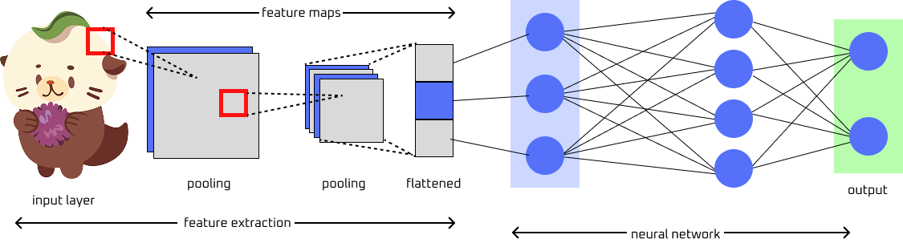

Convolutional neural network (CNN) is a a type of deep learning, feedforward neural network that contains multiple, different layers for training. It learns features through a filter (kernel) optimization and designed to process structured grid-like data by capturing spatial relationships between pixels. The hidden layers of the CNN include one or more layers that perform convolutions. The hidden layer includes the feature extraction area and the neural network (as seen in the figure). The convolution operation generates a feature map, which then becomes the input for the next layer.
Other key components of CNNs include:- convolutional layer: extracts features from the input data using filters or kernels. This layer helps preserve the spatial relationships between pixels.
- pooling layer: reduces the dimensions of data by combining outputs of neuron clusters at one layer into a single neuron in the next layer. This allows for faster computation and reduce in memory use.
- flattening: converts multi-dimensional features of the map into a one-dimensional vector after convolution and pooling. This layer is then passed into the fully connected layer.
- fully connected layer: connects every neuron in one layer to every neuron in another layer. This layer can be seen in the neural network of the figure.
CNNs can process and predict from various types of data, such as text, images, and audio. They do not suffer from vanishing and exploding gradients, unlike RNNs. This is because of regularization that comes form using shared weights over fewer connections.

Figure: Simplified diagram of a CNN. Image provided by Serena Ngo. See credits for references.
CNNs excel in deep-learning tasks and computer vision, including image processing. They popularly used for image-relayed tasks. Some applications of CNNs include image and video recognition, image and video classification, segmentation and analysis, brain-computer interfaces. Some more specific use cases are financial time-series, drug discovery, anomaly detection, and learning of board games.
Advantages of convolutional neural networks include effective learning and detecting of spatial patterns, edges, textures, and shapres. CNNs are also robust in translation, rotation, and scaing of input data. This makes CNNs great for learning important features from videos, images, and audio. Lastly, CNNs support end-to-end training, making the model pipeline simple.
Like all neural networks, CNNs require high computational power and memory space. They are also prone to overfitting and require large amounts of annotated data for quality training and performance. CNNs are also sensitive to noisey data and adversarial inputs.